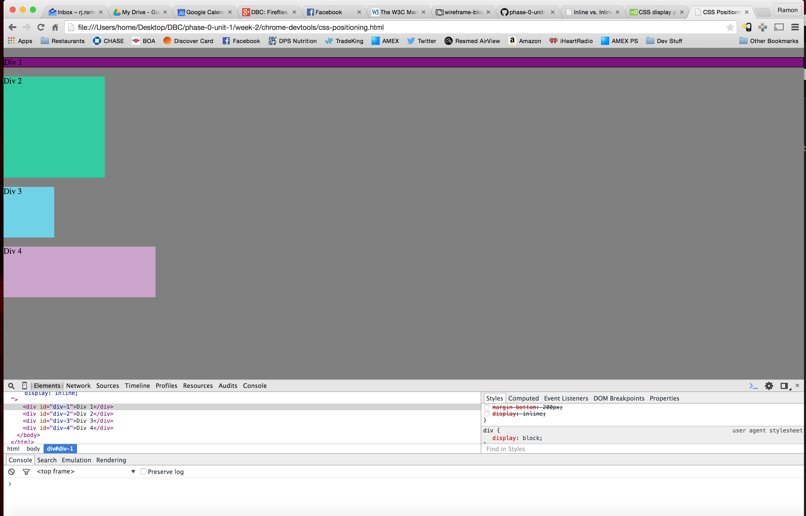
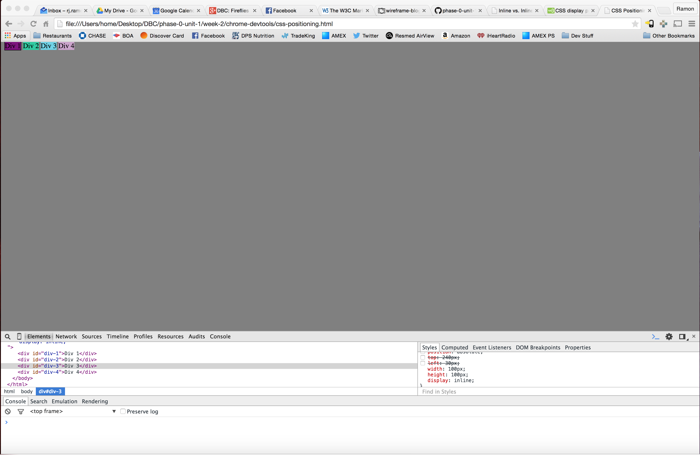

The difference between using Inline or Inline Block Display
May 30, 2015
There are many different ways to move blocks around your page using CSS. A block can be anything encased in a tag in your HTML file. One of the ways is by using the display attribute. Let's say you have 4 divs like in the image below:
Right now the divs are set to display in block formation. This means that each div will display its whole block. In this case, Div 1 is a purple line running across the page. You see this because a background color is set. Div 2 has a height and width of 200px making a square with a green background color. The remaining divs have their own height and widths, along with different colors to distinguish them. In the block display, divs will not allow other divs on their left or right. Each div will force a line break after the block element. This would be good if you want distinct separation between your blocks.
The picture above shows when the divs are set to a display of inline formation. The blocks are now positioned side by side. The blocks cannot have a width and height set in this formation. Right and left margins can be changed, but top and bottom margins cannot. Inline styles can be used when creating quick HTML/CSS mockups. They are not meant to be shared with other elements. Since they're the lowest level possible of the cascade, they'll override all other styles. So you need to be careful.

The picture above demonstrates the inline-block formation. Here, the blocks remain fully intact, with regards to height and width, and are also side by side. Top and bottom margins can be altered here, as well. This would be good to use if you would like to have pictures displayed side by side that may not be all the same size.